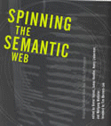

|  |
| About IR |
| Editors |
| Author instructions |
| Copyright |
| Author index |
| Subject index |
| Search |
| Reviews |
| Register |
| Home |
Fensel, D., Hendler, J.A., Lieberman, H. and Wahlster, W. (Eds.) Spinning the Semantic Web: bringing the World Wide Web to its full potential. Cambridge, MA: MIT Press, 2003. xxiii, 479 p. ISBN 0-262-06232-1 $40.00
Early confidence on the part of the reader, deriving from the pedigree of this 2003 book which emanates from a prestigious press, with a foreward by Tim Berners-Lee is arguably somewhat dented by initial impressions.
The book presents a collection of papers prepared from a conference that took place in 1999. Moreover, all but the first two pages of Berners-Lee's forward was written in 1997. He notes:
Rather than attempt to update it, I leave it as it stands, advising the reader that things change fast on the Internet, and one should take the following article in context of 1997.
Arguably not a propitious start. However, the first two pages of the foreward do provide a useful if brief overview of the current state of the art as of December 2002, and the remaining pages are still worth reading. Reader confidence is further restored with the realisation that the technical content of this 479-page tome is of high quality, reporting substantial work.
Spinning the Semantic Web is organised into three main sections:
- languages and ontologies;
- knowledge support; and
- dynamic aspects.
It covers a wide range of issues including software agents; ontology and schema language development; ontology-based semantic querying; knowledge mobility; Web-based ubiquitous computing; semantic annotations to Web-based information sources; and agents to support 'doing things' as well as 'finding things' on the Web.
The contributions are substantial, averaging in the region of 30 pages each. They are generally well written, with clear and meaningful examples. There are many diagrams and screen shots, which this reviewer found helpful in terms of clarity and speed of understanding.
The book is well produced and structured, with effective use of white space and good layout, and generous use of section and sub-section headings in each chapter. It is well indexed, and includes author affiliations, Websites and email addresses. The three main section headings are used as a thematic device to organise the various contributions. However, it would have been useful to include at least a short separate introduction to each of these three sections.
This book is targeted towards those requiring an overview of recent developments from a predominantly technical point of view. At $40 hardback list price, bearing in mind the quality and substantial nature of its technical content, it is good value for money.
The approach is most appropriate for an audience of programmers and developers of Web systems, services and applications. However, the less technologically-oriented reader already familiar with the notions and to some extent workings of metadata and ontologies will be able, with the skipping of technical detail where appropriate, to glean a useful overview of developments in terms of what they are intended to enable and achieve from the point of view of users of the Semantic Web. Such a reader will find the Introduction particularly useful in this respect.
Overall, this is an excellent book that will be essential reading particularly for students, researchers and developers.
Nigel Ford
Reader
University of Sheffield
UK
December 2003
How to cite this review
Ford, N.J. (2004) Review of: Fensel, D., et al., (Eds.) Spinning the Semantic Web: bringing the World Wide Web to its full potential (2nd ed.) New York, NY: Springer, 2003 Information Research, 9(2), review no. R118 [Available at: http://informationr.net/ir/reviews/revs118.html]